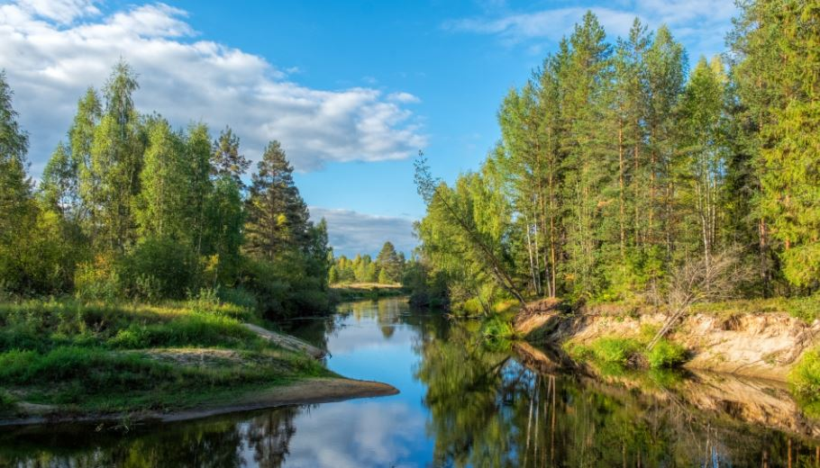

Taiga

Características
La taiga también es conocida como bosque boreal o bosque de coníferas, ya que la principal característica de este bioma son las formaciones boscosas y la combinación de éstas con ambientes climatológicos frescos.
Ubicación geográfica
La taiga se encuentra justo debajo de la Tundra y limita al sur con la estepa. Abarca regiones al norte de Rusia, Canadá, Europa y Alaska.
Este bioma es exclusivo del hemisferio norte de la tierra.
Clima
Aunque es menos frío que la tundra, el invierno puede llegar a conservar temperaturas de -54°C. En verano puede subir a 19°C pero la temperatura constante oscila entre los 0 y los 5°C.
No llueve mucho pero hay gran cantidad de humedad y el proceso de descomposición se da de manera muy lenta.
Flora
En la taiga se dan formaciones boscosas de coníferas, siendo la mayor masa forestal del planeta.
Existen líquenes, musgos, pinos, abedules y abetos. Las hojas que conforman las coníferas son en forma de aguja y contienen una especie de cera que las protege de la congelación. Son de color obscuro debido a que absorben el calor del sol y lo utilizan para llevar a cabo su proceso de fotosíntesis.
Los árboles están formados de hojas perennes, es decir, en forma de cono invertido, lo que permite que la nieve no se almacene en las hojas y así evite romper las ramas por el peso.
Fauna
Debido a las condiciones muy frías de temperatura, varias especies animales emigran hacia latitudes más cálidas.
En la taiga habita el oso pardo, lobo, comadreja, zorro, alce, lince, gato montés, visón, conejo, marta, ardilla, ciervo y aves como el halcón y el búho por mencionar algunos.
Paisaje de la Taiga
El paisaje de la taiga parece inhabitado y el ambiente es muy tranquilo. Puede estar rodeado de cadenas montañosas cubiertas de nieve. Las grandes extensiones de árboles y el clima frío, ofrecen una atmósfera de calma y en contacto con la naturaleza.
ATRAS